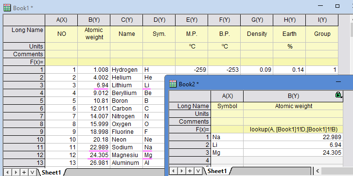

Lookup
Lookup-func
概要
この関数は、
- ベクトルvs内の文字列パターンstrを検索し、見つかった場合は、同じインデックスを持つベクトルvrefから値を返します。ベクトルvrefには数値または文字列値を含めることができます。 vrefが指定されていない場合、vsで見つかったstrのインデックスを返します。デフォルトでは、この関数はvsで文字列全体を検索するします (option = 2)。一致するものがなく、vrefが数値の場合、関数は欠損値("--")を返します。vrefに文字列が含まれている場合、空の文字列が返されます。
- この関数は、ベクトルvd内の数値ddも検索し、同じインデックスを持つベクトルvrefから値を返します。vrefが指定されていない場合、vdで見つかったddのインデックスを返します。デフォルトでは、関数はvdに最も近い値を検索します (option = 2)。option = 0の場合、ddより小さい最も近い値を検索します。option = 1の場合、ddよりも大きい最も近い値を探します。
この関数はoption =0 または =1を使用して最も近い一致を返しますが、Lookup()はワイルドカード文字をサポートしていません。
構文
vrefに数値が含まれている場合、
double Lookup(string str$, vector<string> vs[, vector vref, int option, int Case])
vrefに文字列値が含まれている場合、
string Lookup(string str$, vector<string> vs[, vector<string> vref, int option, int Case])$
数値ベクトルvdを検索する場合、
double Lookup(double dd, vector vd[, vector vref, int option, int Case])
パラメータ
str
- ベクトルvsで検索する文字列パターン。
vs
- 文字列パターンstrが検索されるベクトル。
dd
- ベクトルvdで検索する倍精度浮動小数点数型。
vd
- 値ddが検索されるベクトル。
vref
- ［オプション］n番目の値が返される参照ベクトル。nはベクトルvs/vd内の文字列str/ddのインデックス。vrefが指定されていない場合はnを返します。
option
- （オプション）文字列の照合方法を指定する整数。
- option = 2 （デフォルト）：完全に一致する文字列を検索します（Caseも参照）。
- option = 0：ベクトルvsは昇順でソートされます。strが見つからない場合、関数はstrより小さい最も近い値のインデックスを取得します。
- option = 1：ベクトルvsは降順でソートされます。strが見つからない場合、関数はstrより大きい最も近い値のインデックスを取得します。
Case
- （オプション）検索で大文字と小文字を区別するかどうかを指定する整数。
- case = 0 （デフォルト）：検索で大文字と小文字を区別しません。
- case = 1：検索で大文字と小文字を区別します。
戻り値
vsにstrが見つかった場合は、同じ行インデックスのベクトルvrefに値を返します。
option = 2でstrが見つからなかった場合は、空の文字列または欠損値を返します。
option = 0でstrが見つからなかった場合は、strに最も近い小さい値に対応する値を返します。strより小さい値が存在しない場合は、欠損値（数値）または空の文字列（文字列）を返します。
option = 1でstrが見つからなかった場合は、strに最も近い大きい値に対応する値を返します。strより大きな値が存在しない場合は、欠損値（数値）または空の文字列（文字列）を返します。
例
周期表Book1で元素を検索し、対応する原子量を指定します。

上記のBook1をアクティブにして、LabTalkスクリプトを使用してシンボルを検索し、対応する名前を出力します。
range symbol=col(D);
range name=1!col(C);
string str1$ = Lookup("Li", symbol, name)$;
str1$=; //リチウムが出力される